Un'interfaccia moderna per un acquisitore storico
Il Fluke Hydra 2620A / 2625A è un acquisitore dati da banco con 21 canali: tensioni continue e alternate, resistenze a 2 e 4 fili, frequenza, termocoppie e termoresistenze Pt100. È ancora uno strumento ottimo, ma il software originale è dell'epoca di DOS e Windows e oggi è difficile farlo funzionare.
Fluke Hydra Monitor è un unico script Python (Tkinter, matplotlib e pyserial) che parla con lo strumento direttamente sulla seriale RS-232, gira su Linux e non richiede altro. Mostra la lettura in grande, uno strumento analogico a bobina mobile disegnato come quelli da pannello, un grafico che scorre, l'acquisizione su più canali e il salvataggio in CSV.
Con un ESP8266 e un MAX3232 la stessa interfaccia diventa una pagina web, raggiungibile anche dal telefono: è Hydra Web. La scheda si monta sul retro dello strumento con un supporto stampato in 3D che usa la feritoia GPIB, con tanto di modello da ruotare nel browser. Più sotto ci sono anche le foto dello strumento aperto.
Versione 1.2.0 · 73 de IV3HGA

Che cosa fa
Tutte le funzioni dell'Hydra
V DC, V AC, Ω a 2 e 4 fili, frequenza, termocoppie J K E T N R S B C, Pt100. 21 canali, con il CH0 (ingresso frontale) ben evidenziato.
Quattro modalità
LIVE con lo strumento analogico, MONITOR con il grafico, Trigger + LAST? per le configurazioni a scansione, MULTI-CHANNEL con più canali insieme.
Strumento analogico
Quadrante color crema, specchio antiparallasse, ago con dinamica del 2° ordine e leggero overshoot, rimbalzo a fondo scala, spia OL. Portate 1-3-10-30 automatiche e scala a zero centrale per valori negativi.
Grafico intelligente
Autoscala che si allarga subito e si restringe solo quando serve, prefissi SI sugli assi, linea della media, finestra da 10 s a 1 h, limiti manuali con suffissi (300m, 1.5k).
Multicanale
Qualsiasi insieme dei 21 canali, ognuno con funzione e portata proprie: riquadri con i valori in tempo reale, una traccia per canale e vista normalizzata quando le grandezze sono diverse.
Dati e robustezza
Statistiche min/max/media, gestione degli overload, CSV scritto lettura per lettura. Un solo thread possiede la porta seriale, tre tentativi sugli errori, e lo strumento viene sempre lasciato pulito con MON 0.
L'Hydra, dentro e fuori
Il mio Hydra 2625A, aperto sul banco. Clicca su una foto per vederla a piena risoluzione.
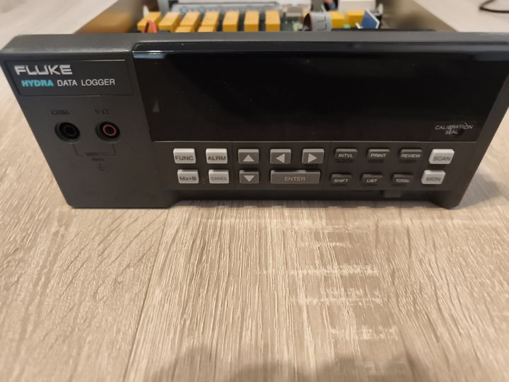
Il frontale: display fluorescente, tasti FUNC, ALRM, Mx+B, INTVL, SCAN e MON.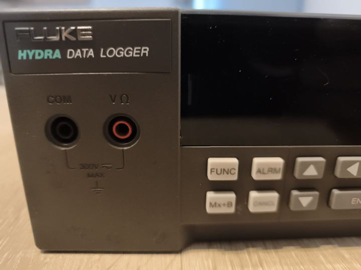
Le boccole frontali COM e V Ω (300 V max): sono il canale 0.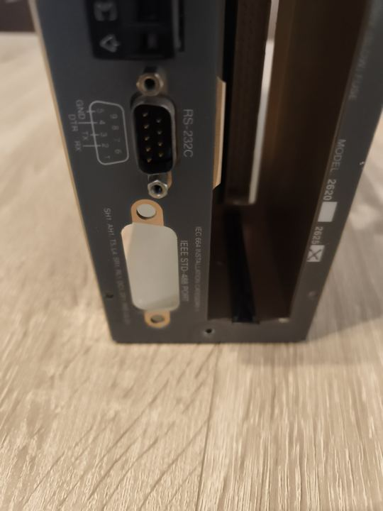
Il retro: la RS-232C con la piedinatura serigrafata (RX 2, TX 3, DTR 4, GND 5) e, sotto, l'apertura IEEE-488 chiusa da un tappo: è lì che va il supporto per il Wemos.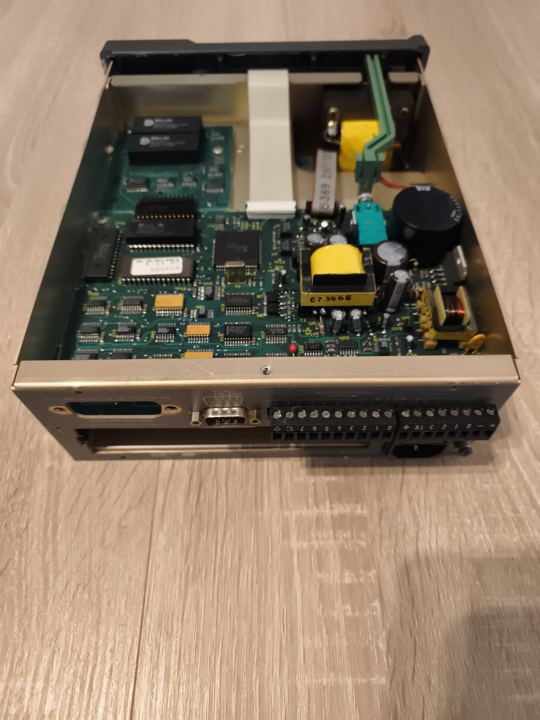
Visto da dietro, aperto: l'apertura GPIB, il connettore RS-232, le morsettiere a vite degli ingressi e la presa di alimentazione.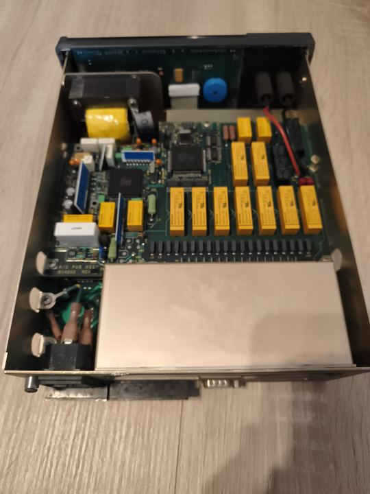
La scheda A/D ("A/D PWB ASSY"): i relè gialli selezionano i canali, la schermatura copre le morsettiere degli ingressi.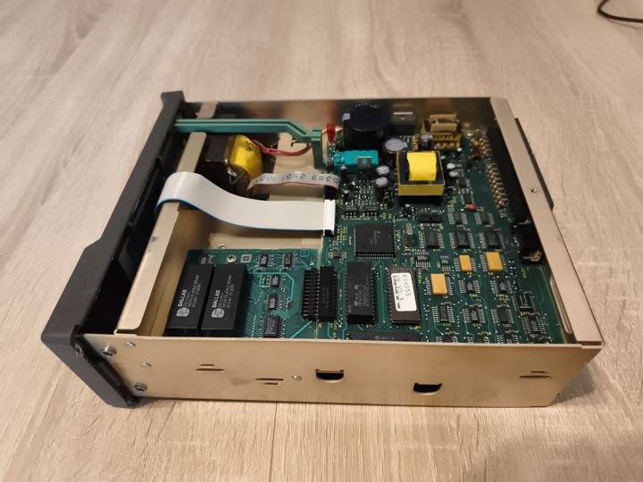
La scheda principale ("MAIN ASSY"): a destra l'alimentatore con i trasformatori, al centro il microcontrollore, in basso a sinistra la scheda di memoria.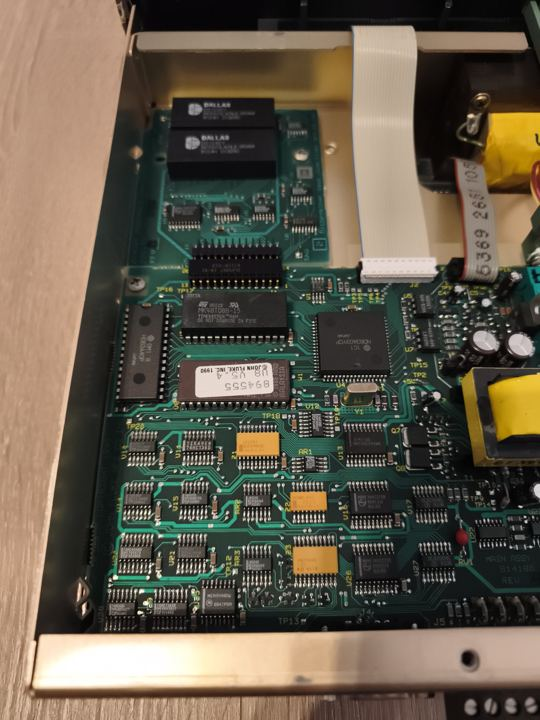
La sezione digitale: microcontrollore Hitachi HD63A03, EPROM del firmware (U8, versione 5.4, John Fluke 1990), cristallo, logica 74HC e reti resistive.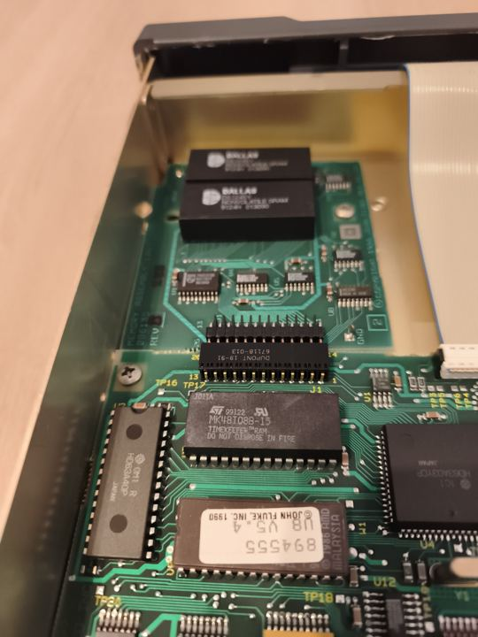
La scheda di memoria con due SRAM non volatili Dallas DS1245Y, innestata su J1. Sotto, la MK48T08 "Timekeeper", RAM con orologio e batteria integrati.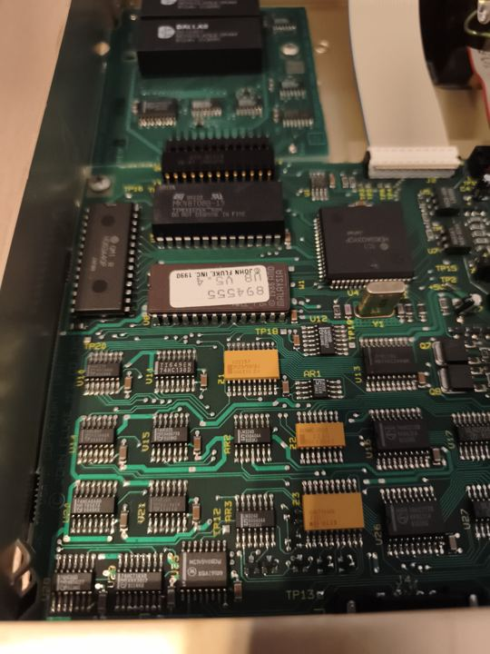
Dettaglio: Hitachi HD63A40, EPROM e Timekeeper; sotto, la logica 74HC, gli LM324 e le reti resistive Dale.Una nota pratica: la MK48T08 e le DS1245Y hanno la batteria al litio dentro il contenitore. Dopo più di trent'anni possono essere scariche: se l'Hydra perde configurazione e ora a ogni spegnimento, il sospetto va lì.
Le schermate
 Ingresso negativo: lo strumento passa da solo a una scala ±3 V a zero centrale.
Ingresso negativo: lo strumento passa da solo a una scala ±3 V a zero centrale.
 Overload: ago a fondo scala, spia OL accesa e lettura in rosso.
Overload: ago a fondo scala, spia OL accesa e lettura in rosso.
 MONITOR: grafico che scorre, con autoscala intelligente.
MONITOR: grafico che scorre, con autoscala intelligente.
 MULTI-CHANNEL: un riquadro e una traccia per ogni canale.
MULTI-CHANNEL: un riquadro e una traccia per ogni canale.
 Tensione, resistenza, temperatura e frequenza insieme, in vista normalizzata.
Tensione, resistenza, temperatura e frequenza insieme, in vista normalizzata.
 Configurazione dei canali: CH n+10 sta accanto a CH n, per le misure a 4 fili.
Configurazione dei canali: CH n+10 sta accanto a CH n, per le misure a 4 fili.
Hydra Web: l'Hydra nel browser con un ESP8266
C'è anche un firmware per ESP8266. Un Wemos D1 mini (Pro) con un convertitore MAX3232 collegato alla porta RS-232 dell'Hydra trasforma l'acquisitore in uno strumento di rete: aprendo http://hydra.local da qualsiasi browser, anche dal telefono, si trova la stessa interfaccia del programma desktop.
L'acquisizione gira sull'ESP8266, non nel browser: continua anche a pagina chiusa, e riaprendola da qualsiasi dispositivo si ritrova la sessione in corso con le ultime 600 letture conservate sulla scheda.

Stesse modalità del desktop
LIVE con lo strumento analogico, MONITOR con il grafico, Trigger + LAST? e MULTI-CHANNEL (Sweep o Hydra scan), con lettura grande, statistiche, riquadri dei canali e finestra di configurazione.
Esportazione e console
CSV di tutte le letture e, in multicanale, una riga per scansione. Una console manda comandi grezzi all'Hydra: comoda per verificare la sintassi della scansione.
Ponte seriale WiFi
La scheda espone la seriale sulla porta TCP 2625: nel programma desktop basta scegliere socket://hydra.local:2625 per usarlo senza cavo. Mentre il PC è collegato, il controllo dal web è in pausa.
Rete senza fatica
Configurazione WiFi dalla pagina, access point di riserva con captive portal, nome mDNS hydra.local, aggiornamenti OTA.
Nessuna libreria esterna
Solo il core Arduino per ESP8266. La pagina è compressa in gzip dentro il firmware e non ha bisogno di internet: nessun CDN.
Fatta anche per il telefono
La pagina si adatta allo schermo: sullo smartphone lettura, riquadri e grafico vengono impilati, i comandi finiscono in fondo.
Le schermate
 LIVE nel browser, con lo strumento analogico.
LIVE nel browser, con lo strumento analogico.
 MONITOR: il grafico con autoscala.
MONITOR: il grafico con autoscala.
 Configurazione dei canali, salvata sulla scheda.
Configurazione dei canali, salvata sulla scheda.
 Sullo smartphone.
Sullo smartphone.
Il collegamento
Wemos D1 mini Pro MAX3232 (3,3 V) Hydra RS-232 (DB9) ───────────────── ─────────────── ────────────────── 3V3 ───────────────── VCC GND ───────────────── GND ────────────────────── pin 5 GND D8 (GPIO15) ───────── T1IN T1OUT ──────────── RX dell'Hydra D7 (GPIO13) ───────── R1OUT R1IN ──────────── TX dell'Hydra 5V ── USB, o step-down a 5 V dall'alimentazione 9–16 V dell'Hydra
- Usa D8 e D7, non TX e RX. TX/RX (GPIO1/GPIO3) sono condivisi con il convertitore USB-seriale della scheda: con il MAX3232 collegato lì la programmazione fallisce e i messaggi di avvio dell'ESP8266 arrivano all'Hydra. Il firmware sposta la UART su D8/D7 in hardware (
Serial.swap(),HYDRA_UART_SWAP 1, l'impostazione predefinita): la USB resta libera e il collegamento è veloce e affidabile come su TX/RX. - D8 deve essere basso all'accensione: il D1 mini ha già una resistenza di pull-down, che va bene con un ingresso del MAX3232. Se la scheda non parte con il convertitore collegato, controlla che il modulo non abbia un pull-up forte su T1IN.
- Il MAX3232 va alimentato a 3,3 V, mai a 5 V: le sue uscite pilotano direttamente i pin dell'ESP8266.
- Se l'Hydra non risponde, apri la pagina di debug (qui sotto).
Programmazione e primo avvio
- Il modo più rapido: il firmware già compilato per il D1 mini Pro, nella cartella
firmware/bin/e in ogni release. Il file…_D7-D8.binè per il collegamento consigliato,…_TX-RX.binper chi usa TX e RX.
esptool.py --port /dev/ttyUSB0 write_flash 0x0 hydra_web_…_D7-D8.bin
Per compilarlo da sé: Arduino IDE con il core esp8266 3.1.x, scheda LOLIN(WEMOS) D1 mini Pro (o D1 mini), firmware/hydra_web/hydra_web.ino; oppure PlatformIO con pio run -e d1_mini_pro -t upload nella cartella firmware.
- Senza rete configurata la scheda apre l'access point Hydra-XXXX (password
hydra2625, modificabile inconfig.h); la pagina si apre da sola, altrimenti vai su http://192.168.4.1. - WiFi… → nome della rete e password → Save & restart.
- Dalla tua rete apri http://hydra.local. Gli aggiornamenti successivi si possono fare via WiFi (OTA).
L'API HTTP
La pagina parla con la scheda tramite una piccola API JSON, utilizzabile anche da script propri:
| Metodo e percorso | A che cosa serve |
|---|---|
GET /api/status | stato di scheda, strumento, sessione e WiFi |
GET /api/readings?since=SEQ | le letture successive a SEQ, al massimo 200 per chiamata |
POST /api/start, /api/stop | avvia o ferma: modalità, metodo, periodo e configurazione dei canali |
POST /api/cmd | un comando grezzo all'Hydra (solo a misura ferma) |
GET/POST /api/config | la configurazione dei canali, salvata sulla scheda |
POST /api/wifi, /api/reboot | rete e riavvio |
Per modificare la pagina senza riprogrammare la scheda c'è firmware/mock_server.py, che simula il dispositivo su http://localhost:8080; build_web.py rigenera la pagina compressa per il firmware. Le letture restano nella pagina finché è aperta (fino a 200 000): esportale prima di chiuderla.
La pagina di debug della seriale
Su http://hydra.local/debug (o Debug… nella pagina principale) c'è tutto quello che serve quando lo strumento non risponde:
- Diagnosi a parole: non arriva nulla, arrivano byte ma nessuna risposta valida (velocità o parità sbagliate), comunicazione corretta, comandi rifiutati con
?>, risposte perse. - Stato del collegamento: pin usati, formato, contatori dall'accensione (byte, comandi,
=>,?>,!>, timeout, byte spuri), ultimo byte e ultima risposta buona. - Prove rapide:
*IDN?,FUNC? 0,MON?,SCAN?,INTVL?,TRIGGER?, Ctrl-C o qualsiasi comando. - Prova di loopback: scollega l'Hydra, ponticella i pin 2 e 3 del DB9 del convertitore e avvia la prova. Se il messaggio torna indietro, ESP8266 e MAX3232 funzionano e il problema è nel cavo o nello strumento.
- Traffico: le ultime 48 righe sulla linea, in tempo reale, con i caratteri di controllo resi visibili.
L'hardware: il Wemos nella feritoia GPIB
Il retro dell'Hydra 2620A / 2625A ha un'apertura per l'interfaccia opzionale IEEE-488 (GPIB) che quasi sempre resta inutilizzata. Questo supporto stampato in 3D la sfrutta per ospitare la scheda di Hydra Web:
- una piastra da 2,5 mm, fissata con le due viti dei fori GPIB;
- sul retro, una linguetta con la forma della feritoia che entra nell'apertura: allinea la piastra, le dà rigidità ed è cava, perché dentro sta il modulo MAX3232, in piedi;
- il Wemos all'esterno, parallelo alla feritoia, sotto un coperchio basso stretto dalle stesse due viti.
In tutto sporge 12 mm dal pannello. Non si fora nulla e non si modifica nulla dello strumento: si toglie in due minuti.
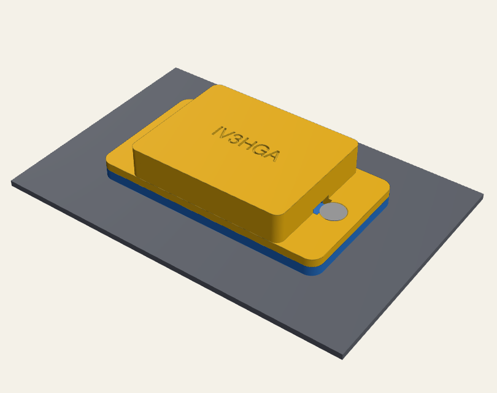
Il modello in 3D
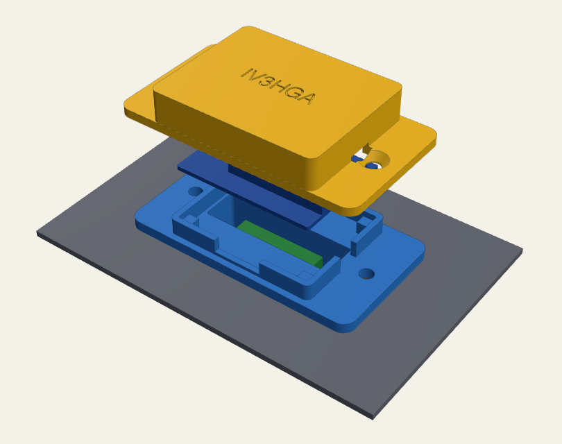
Trascina per ruotare, rotella o due dita per lo zoom, tasto destro per spostare. Sezione taglia il modello a metà per vedere il MAX3232 dentro la linguetta. Wemos e MAX3232 sono sagome semplificate; i modelli vengono dal file parametrico del progetto.
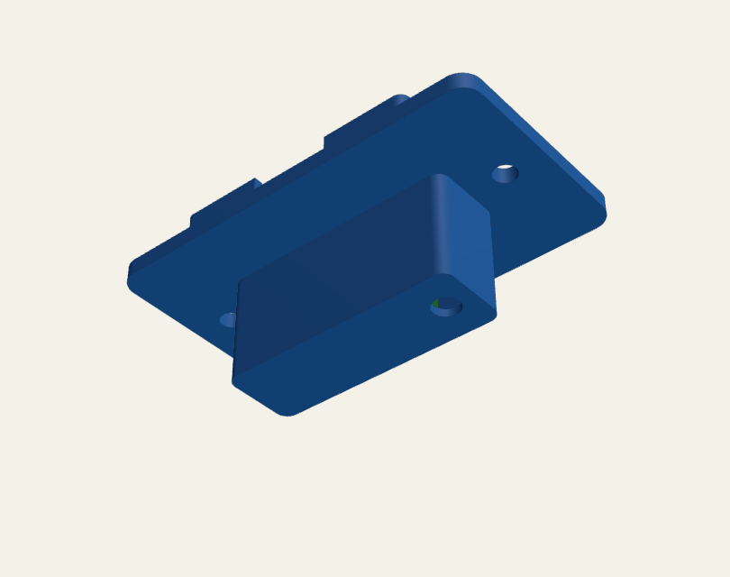
Il retro: la linguetta che entra nella feritoia GPIB.Le parti
Piastra
2,5 mm di spessore, 59 × 32 mm, con i fori per le viti all'interasse GPIB di 47,04 mm. Sul davanti una cornice con quattro piedini su cui appoggia il Wemos; sul retro la linguetta, con una tasca di 33,2 × 9,2 × 17 mm per il MAX3232 e un foro in fondo per far passare i fili verso l'interno.
Coperchio
Copre il Wemos e viene stretto dalle stesse due viti della piastra, così preme gli angoli della scheda e la tiene ferma senza altre viti. Sopra c'è inciso IV3HGA; una tacca verso il DB9 fa uscire i fili di alimentazione.
Minuteria
2 viti M3 × 10 a testa svasata con 2 dadi M3 dietro il pannello, un Wemos D1 mini o D1 mini Pro, un modulo mini MAX3232, filo sottile.
Prima di stampare: misura
Le quote dipendono dallo strumento: controllale con un calibro e cambiale in cima alla macro (sono segnate con (*)).
| Parametro | Predefinito | Che cosa misurare |
|---|---|---|
slot_len, slot_w | 36,0 × 12,0 | la feritoia GPIB nel punto più stretto (è a D: prendi il lato corto) |
gpib_pitch | 47,04 | distanza tra i due fori GPIB (valore dello standard IEEE-488) |
panel_t | 1,5 | spessore del pannello |
plate_w | 32 | spazio libero attorno alla feritoia (da un lato c'è il vano delle opzioni) |
tongue_depth | 16 | profondità libera dietro il pannello (sotto c'è la scheda madre) |
module_l, module_w | 21,5 × 13,5 | il tuo modulo MAX3232 |
fit_clear | 0,20 | gioco della linguetta per lato: 0,15 per un incastro più stretto, 0,3 se non entra |
Modificarlo in FreeCAD
- Macro → Macro…, scegli
hydra_wemos_plate.FCMacroed esegui: compaiono Plate e Cover. - Cambia i numeri nel blocco
P = dict(...)(Macro → Macro… → Modifica) e rieseguila. - File → Esporta ogni parte in STL (o STEP).
Senza FreeCAD lo stesso file è anche uno script CadQuery:
pip install cadquery python3 hydra_wemos_plate.FCMacro # riscrive STEP e STL
Stampa
- PETG o ASA, non PLA: vicino a uno strumento caldo il PLA si ammorbidisce.
- Strati da 0,2 mm, 3 perimetri, riempimento 30 %.
- Piastra: in piedi sulla punta della linguetta, con supporti solo dal piatto per l'anello attorno alla linguetta (i supporti ad albero vanno bene).
- Coperchio: con la faccia superiore sul piatto, senza supporti: la scritta incisa viene nitida.
Il montaggio
- Salda i fili: dal Wemos 3V3, GND, D8 → T1IN, D7 ← R1OUT del MAX3232; dal lato RS-232 TX, RX e GND verso un DB9 femmina per la porta RS-232 dell'Hydra, oppure dall'interno dello strumento attraverso il foro in fondo alla linguetta.
- Infila il MAX3232 nella tasca dal davanti, in piedi, con i fili verso l'alto.
- Spingi la linguetta nella feritoia GPIB.
- Appoggia il Wemos sui quattro piedini dentro la cornice, con l'ESP-12 verso l'alto e l'antenna verso il DB9; i fili passano dalle aperture della cornice.
- Metti il coperchio e infila le due viti attraverso coperchio, piastra e pannello, con i dadi dietro il pannello. Il coperchio blocca gli angoli del Wemos.
- Alimentazione: i fili 5V e GND escono dalla tacca verso il DB9. Per usare invece la presa micro-USB imposta
usb_opening=Truee alzawemos_lifta circa 5 mm, così la spina passa sopra la piastra.
Se l'Hydra non risponde apri http://hydra.local/debug: se TX e RX sono invertiti, scambia i fili di D7 e D8.
I file
| File | Che cos'è |
|---|---|
hydra_wemos_plate.FCMacro | il modello parametrico: macro di FreeCAD e script CadQuery |
hydra_wemos_plate.step | piastra e coperchio, da aprire in FreeCAD o in qualsiasi CAD |
hydra_wemos_plate.stl | la piastra, già orientata per la stampa (in piedi sulla linguetta) |
hydra_wemos_plate_cover.stl | il coperchio, già orientato per la stampa (faccia superiore sul piatto) |
3D.md, preview/ | modelli leggeri per il visualizzatore 3D di GitHub |
Tutti i file, insieme al programma e al firmware già compilato, sono anche nell'ultima release.
Come funziona
Il protocollo
Sulla seriale (9600 baud, 8N1, senza controllo di flusso) ogni comando ASCII termina con CR. L'Hydra risponde con un'eventuale riga di dati seguita da un prompt: => comando eseguito, ?> errore di sintassi, !> errore di esecuzione. Se lo strumento ha l'eco attiva, il programma la toglie da solo.
| Comando | A che cosa serve |
|---|---|
Ctrl-C, *IDN? | alla connessione: annulla comandi a metà e legge l'identificazione |
SCAN 0, MON 0 | ferma scansione e Monitor prima di configurare e all'uscita |
FUNC ch,VDC,range … | configura il canale (VDC, VAC, OHMS, FREQ, TEMP) |
MON 1,ch + MON_VAL? | legge il canale tramite la funzione Monitor (LIVE, MONITOR) |
*TRG + LAST? ch | modalità a trigger: ultimo valore della scansione |
In multicanale il metodo predefinito "Sweep" sposta il Monitor da un canale all'altro e scarta la prima lettura dopo ogni cambio, che potrebbe appartenere ancora al canale precedente.
L'architettura
Tk (interfaccia) thread di lavoro (porta seriale)
──────────────── ────────────────────────────────
pulsanti ─► coda lavori ──► connetti / configura / avvia
letture a cadenza fissa
_poll() ogni 100 ms ◄── coda eventi ◄── letture, stato, errori
├─ lettura, statistiche, CSV
├─ strumento analogico
└─ grafico ogni 300 ms
- Solo il thread di lavoro tocca la porta: i comandi non si accavallano mai.
- Le letture sono programmate come
next += periodo: il periodo non deriva nel tempo. - In multicanale legge un canale per giro, così Stop e chiusura della finestra rispondono subito anche durante una scansione lunga.
L'ago dello strumento
L'ago non salta sul valore: si muove come quello di uno strumento a bobina mobile vero, con un leggero superamento e il rimbalzo sui fermi. Come e perché, con tutta la matematica, è nella sezione Un vezzo matematico.